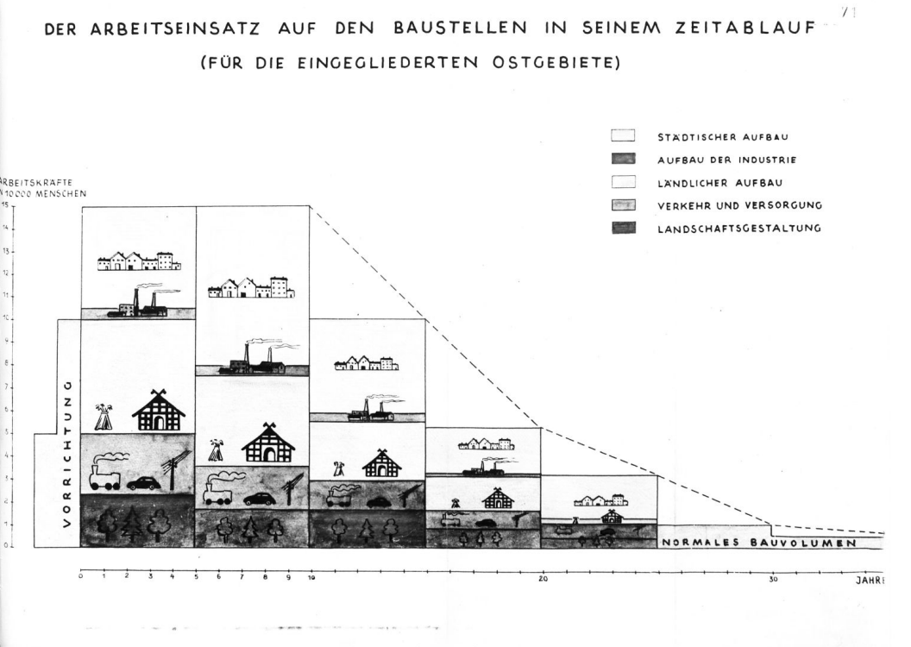

Общее - “О Генеральном плане ОСТ”

28 мая 1942 года сотрудником Управления штаба имперского комиссара по вопросам консолидации германского народа, оберфюрером СС, профессором Конрадом Мейером-Хетлингом был представлен документ. Этот документ, озаглавленный "Генеральный план Ост", описывал процесс онемечивания захваченных земель на восток от Германии.
«Генеральный план Ост» представлял собой комплекс документов, посвящённых вопросам заселения «восточных территорий» (Польши и Советского Союза) в случае победы Германии в войне.

«Генеральный план Ост» включал в себя перечень документов, в которых рассматривались вопросы заселения «восточных территории», под которыми подразумевались Польша и СССР, после победы нацистами в войне. Не предусматривалось сохранение государственности ни одной нации, Украина, Россия, Латвия и другие просто вошли бы в состав Великогерманского государства.
Генеральный план состоял из трех частей:
- Основные правила будущего заселения.
- Экономический обзор присоединённых территорий и их организация.
- Разграничение населенных пунктов в оккупированных районах.
На завоеванных славянских территориях предусматривалось проведение политики геноцида в ее самых крайних формах. Подрыв «биологической силы» славянских народов планировалось осуществлять следующими основными методами:
- физическим истреблением больших масс народа;
- сокращением населения путем преднамеренной организации голода;
- уменьшением населения в результате организованного снижения рождаемости и ликвидации медицинского и санитарного обслуживания;
- истреблением интеллигенции — носителя и продолжателя научно-технических знаний и навыков, культурных традиций каждого народа и низведением образования до низшего уровня;
- разобщением, дроблением отдельных народов на мелкие этнические группы;
- переселением масс населения в Сибирь, Африку, Южную Америку и другие районы Земли; аграризацией захваченных славянских территорий и лишением славянских народов собственной промышленности».
"Источник жизни"

Лебенсборн Э.В. (буквально: "Источник жизни") была инициированной СС, поддерживаемой государством, зарегистрированной ассоциацией в нацистской Германии с заявленной целью увеличения числа рожденных детей, которые соответствовали нацистским стандартам "расово чистых" и "здоровых" арийцев, основанным на нацистской евгенике(также называемый некоторыми евгениками "расовой гигиеной").

Лебенсборн был основан Генрихом Гиммлером и обеспечивал благосостояние своих в основном незамужних матерей, поощрял анонимные роды незамужних женщин в их родильных домах и выступал посредником усыновление детей такими же "расово чистыми" и "здоровыми" родителями, особенно членами СС и их семьями.
Крест Чести немецкой матери вручался женщинам, родившим больше всего арийских детей. Аборты были легализованы (и, чаще всего, одобрены) нацистами для детей-инвалидов и негерманских детей, но в противном случае строго наказывались.